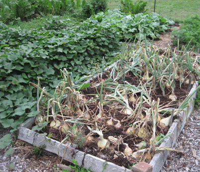

| Planting Growing plants in cell trays saves a lot of time making succession plantings. When one crop is finished, like peas or beans, they are pulled out and new plants, such as lettuce or winter cabbages are planted in that space. There are always plants growing. |
||||||||||||||||||||||||||||||||
| Little plants started in plug trays do not suffer transplanting shock. Their roots are intact and have not been disturbed, so will not wilt. When planted in an outside bed, they immediately start growing. Harden plugs by putting the trays outside in increasing amounts of sunlight for several days before you plant, so they do not get sun burned. | ||||||||||||||||||||||||||||||||
| When transplanting plants, the mulch is spread open and the plant inserted in the soil. When planting seeds, the mulch is raked off and moved to another bed to mulch other plants. |
For this fall planting of mustards, just twelve seeds of six different varieties were planted in cell plug trays and then transplanted into the beds. | |||||||||||||||||||||||||||||||
| With plugs every plant grows. It is an efficient, productive use of garden space. There are no empty spots where transplants have died. | ||||||||||||||||||||||||||||||||
| If there is an empty bed during the summer or fall, it is covered with mulch until it is planted. | ||||||||||||||||||||||||||||||||
| Plants are rotated each year, so they grow in a different bed. A garden plan makes it easy to see from year to year where specific plants were grown. Right: Potatoes Each bed has two long rows where seed potatoes are planted. As the potato plants grow, a thick mulch is added around them to keep the soil damp and cool. |
||||||||||||||||||||||||||||||||
| Harvested garlic in wheelbarrow, and onions still growing in the bed on right. In another month the onion tops will begin to yellow and fall over. (photo below) The plants are pulled up and put in the empty sheep greenhouse to harden off for winter storage. |
Garlic was planted and mulched in the fall, usually late September. The bulbs root up during the fall, and it is one of the first plants up in the spring. By mid July garlic is ready to harvest. I grow a lot of garlic for us and the animals. |
|||||||||||||||||||||||||||||||
|  | ||||||||||||||||||||||||||||||||
| Fall storage cabbages for cold storage or making sauerkraut are started in cell plugs in early June, and transplanted into six packs or 4” pots depending on the weather and where they will be planted in the garden. Cabbages grow very fast during the cooler September and October weather. | ||||||||||||||||||||||||||||||||
| Sweet Potatoes (above, left bed) can be started from slips you grow from tubers or purchased as slips mail order. They grow well in warm weather with loose fertile soil. | ||||||||||||||||||||||||||||||||
| Asparagus, a perennial, needs lime and a yearly top dressing. The new shoots are a spring favorite. | ||||||||||||||||||||||||||||||||
| Carrots grow well in a raised bed. They do not like wet soggy soil. This year had some large wild ones! | ||||||||||||||||||||||||||||||||
| Swiss Chard |
||||||||||||||||||||||||||||||||
 |
||||||||||||||||||||||||||||||||
| Edible Podded Peas are a delicious spring treat! Available in short or tall varieties. |
||||||||||||||||||||||||||||||||
|
Lettuce and Herbs
|
||||||||||||||||||||||||||||||||
| Tomatoes and Horseradish | ||||||||||||||||||||||||||||||||
| Spinach, mustards, lettuce and radishes are planted in early August. Spinach can be picked till snow and it will over winter in the garden with or without a cold frame. It is up early in the spring and will produce an abundant crop until the weather gets hot. | ||||||||||||||||||||||||||||||||
| Grapes produce abundant fruit for eating or wine. Grapes are fun to freeze for winter eating. | ||||||||||||||||||||||||||||||||
| Grow more food over a longer period of time. The benefit to making successive plantings is a continuous supply of vegetables. You can double or triple the amount of food you grow in the same amount of space. |
||||||||||||||||||||||||||||||||
| Garden: September 22, 2018 | ||||||||||||||||||||||||||||||||
| Many plants are cold tolerant, and will keep on producing. Four mulched beds are planted with garlic, and other beds mulched to prepare for winter. |
||||||||||||||||||||||||||||||||
| Garden: October 28, 2016 | ||||||||||||||||||||||||||||||||